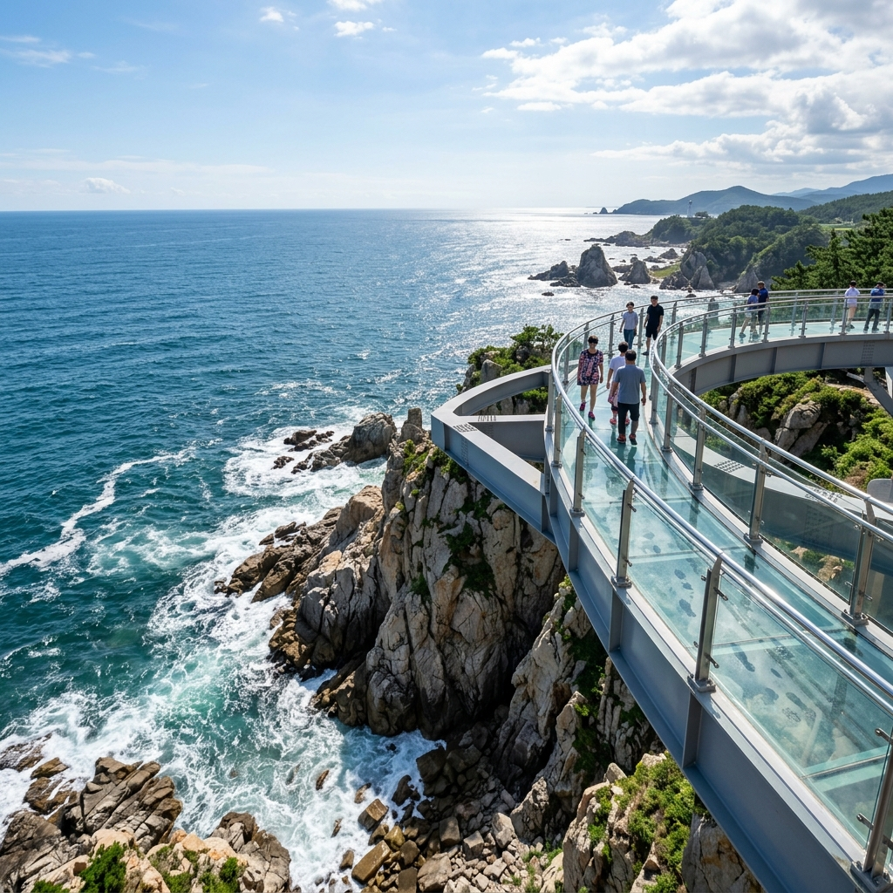
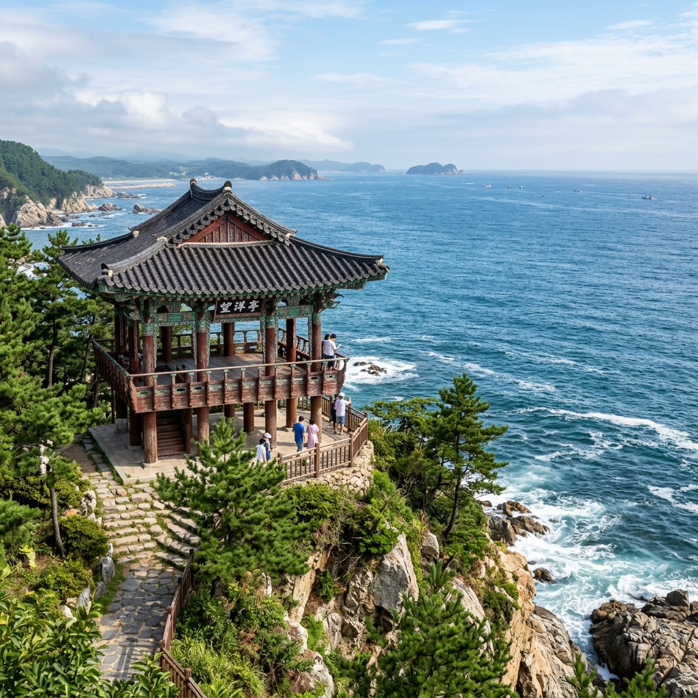
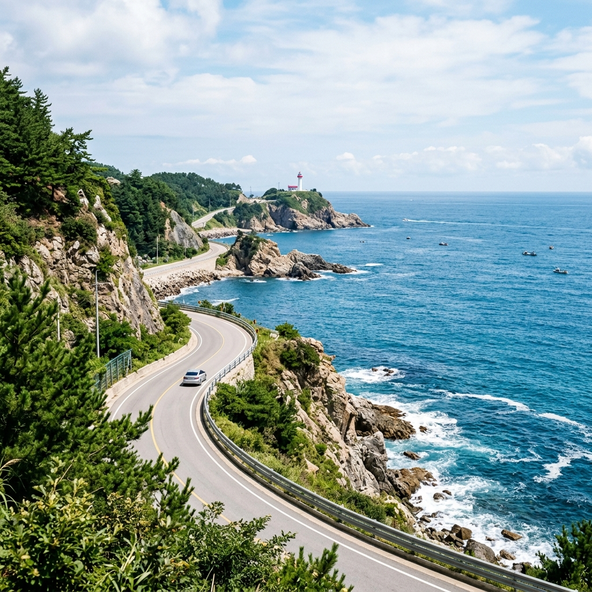

경북 울진 후포 스카이워크 관람과 죽변 해안, 동해안 하루 드라이브 코스
7월 초 긴 연휴를 앞두고 어디 멀리 가볼까 고민하다가 결국 경북 울진으로 방향을 잡았습니다. 강릉이나 속초처럼 붐비지 않으면서도 동해 본연의 짙푸른 색과 해안 절경을 제대로 느낄 수 있는 곳이 있을 것 같았거든요. 처음 울진 후포의 등기산 스카이워크 사진을 봤을 때는 '저게 정말 실제 풍경인가?' 싶을 만큼 절벽 위 유리 데크가 강렬해 보였습니다. 실제로 가보니 사진보다 훨씬 더 아찔하고, 훨씬 더 아름다웠습니다. 이 글은 스카이워크부터 관동팔경 망양정, 죽변 해안도로까지 하루 동안 직접 돌아본 울진 동해안 드라이브 코스를 담은 기록입니다.
01. 울진 후포 등기산 스카이워크, 어떤 곳인가
경북 울진군 후포면 등기산공원에 자리한 등기산 스카이워크는 동해 절벽 위에 얹힌 투명 유리 바닥 데크 산책로입니다. 2016년에 개장했으며 전체 길이가 약 135m에 달합니다. 해면에서 약 50m 높이에 위치해 있어, 유리 바닥 아래로 바닷물이 찰랑이는 절벽 경관이 선명하게 보입니다.
내륙에 있는 계곡형 스카이워크와 근본적으로 다른 점은, 발 아래와 정면이 모두 동해 바다라는 사실입니다. 어느 방향을 봐도 수평선이 걸리고, 아래로는 오랜 세월 파도에 깎인 절벽 기암이 내려다보입니다. 여름에는 동해 특유의 투명도 높은 쪽빛 물색이 더해져 사진 한 장만으로도 여행의 이유가 충분해지는 곳입니다.
입장료는 무료이며 발 커버(덧신) 착용이 필수입니다. 현장에서 무료로 나눠주지만 위생이 걱정된다면 개인 덧신을 챙겨 가는 것이 편합니다. 운영시간은 오전 9시부터 오후 6시이며 강풍·폭우 시 출입이 통제되므로 날씨 확인은 필수입니다.

울진 등기산 스카이워크 유리 데크에서 발 아래 동해 절벽을 내려다본 풍경 / AI 제작 이미지
02. 스카이워크 찾아가는 법과 주차
내비게이션에 '등기산 스카이워크' 또는 '등기산공원'으로 검색하면 됩니다. 후포항 인근 무료 주차장이 있으며 주차 공간은 꽤 넉넉한 편입니다. 서울에서는 영동고속도로 → 동해고속도로를 이용해 약 3시간 30분~4시간이 소요됩니다. 포항에서는 동해고속도로로 약 1시간 10분, 강릉에서는 약 1시간 20분 거리입니다.
대중교통으로는 동서울터미널 또는 강남고속버스터미널에서 울진행 직행버스(약 3시간 30분~4시간)를 타고 울진버스터미널에 도착한 뒤 후포행 군내버스를 환승해야 합니다. 배차 간격이 넓고 울진 내 여러 명소를 하루에 이어 보려면 이동 효율이 많이 떨어지므로, 가급적 자가용이나 렌터카를 이용하는 편이 훨씬 편리합니다.
주차장에서 스카이워크까지는 약 5분 정도 완만한 오르막을 걸어 올라가면 됩니다. 입구에서 발 커버를 받고 입장한 뒤 135m 데크 끝 원형 전망대까지 가면 됩니다. 오전 일찍 방문하면 빛 방향도 좋고 인파도 적어서 여유롭게 사진을 찍을 수 있었습니다.
03. 직접 가보니 — 스카이워크 솔직 후기
✍️ 직접 가보니
오전 9시 개방 직후 도착했더니 주차장이 이미 절반 가까이 차 있었습니다. 여름 성수기 직전이라 그런지 가족 단위 방문객이 많았습니다. 발 커버를 신고 데크 위에 발을 내딛는 순간, 발 아래로 실제 바닷물이 보여서 순간 뒤로 물러서게 되더라고요. 유리가 흔들리지는 않는지 걱정했지만 구조물이 상당히 단단해서 쿵쿵 밟아봐도 전혀 흔들림이 없었습니다. 데크 끝 원형 전망대에서 정면을 바라보면 수평선이, 아래를 보면 절벽과 파도가 동시에 시야에 들어옵니다. 이 순간만큼은 '울진까지 멀리 왔다'는 보람이 확실히 느껴졌습니다.
동행한 일행 중 고소공포증이 있는 분은 데크 끝 전망대까지 나가는 것을 포기했습니다. 유리 바닥을 내려다보는 것 자체가 부담스러우신 분들은 입구 근처 난간 옆에서도 충분히 동해 절벽 뷰를 감상할 수 있습니다. 포토 스팟으로는 데크 중간쯤의 곡선 구간과 끝 원형 전망대 두 곳이 가장 멋진 배경을 만들어냈습니다.
04. 관동팔경 망양정 — 숙종이 현판을 내린 동해 조망
등기산 스카이워크를 본 뒤 차로 약 20분 이동하면 망양정에 닿습니다. 경북 울진군 근남면 산포리에 위치한 이 정자는 관동팔경(關東八景) 중 하나로 꼽히는 유서 깊은 명승지입니다. 조선 숙종 임금이 관동팔경 중 망양정의 경관이 가장 뛰어나다며 '천하제일 망양정(天下第一 望洋亭)' 현판을 내렸다는 기록이 남아 있습니다.
정철의 <관동별곡>을 비롯해 수많은 선인들이 시와 문장을 남긴 이 정자에 오르면 동해 수평선이 180도 파노라마로 펼쳐집니다. 아래쪽으로는 왕피천 하구가 바다로 흘러드는 모습이 함께 보여, 바다와 강이 만나는 독특한 경관을 한 눈에 담을 수 있습니다. 정자 자체는 근현대에 재건된 모습이지만, 조망만큼은 수백 년 전과 다름없이 아득하고 장엄합니다.
주차장에서 정자까지는 완만한 계단을 약 5~7분 오르면 됩니다. 주차는 무료이며 정자 바로 아래까지 안내 표지가 잘 되어 있습니다. 내비게이션에 '망양정'으로 검색하면 주차장까지 정확하게 안내됩니다.

관동팔경 망양정 정자에서 바라본 동해 파노라마 전망 / AI 제작 이미지
05. 죽변 해안도로와 죽변등대 탐방
망양정 관람 후 북쪽으로 약 20~25분 이동하면 죽변면이 나옵니다. 죽변 해안도로는 동해 절벽 위로 이어지는 구불구불한 해안 길로, 창문을 내리고 달리면 파도 소리와 해풍이 차 안으로 들어옵니다. 2000년대 드라마 촬영지로 활용된 덕분에 드라마 팬들에게도 잘 알려진 코스입니다.
죽변등대는 1910년에 건립된 유서 깊은 현역 등대입니다. 흰색 원통형의 단아한 외관이 인상적이며, 등대 주변으로 조성된 해안 산책로를 따라 걷다 보면 기암절벽과 쪽빛 바다가 번갈아 나타납니다. 등대 전망대에서 내려다보는 죽변항 풍경은 이른 아침이나 노을 무렵이 특히 아름답습니다.
죽변항 인근 어촌마을에는 작은 횟집과 어판장이 있습니다. 여름 제철인 오징어와 방어를 신선한 상태로 맛볼 수 있으며, 가격도 관광지치고는 합리적인 편입니다. 죽변에서 울진 시내까지는 차로 약 10분이어서 저녁 식사를 시내에서 해결하는 것도 어렵지 않습니다.

울진 죽변 해안도로 드라이브와 여름 동해 풍경 / AI 제작 이미지
06. 울진 홍게와 해산물 — 여름 제철 먹거리
울진은 영덕과 함께 경북 대게의 양대 집산지입니다. 대게 제철은 11월~이듬해 5월이지만, 7~8월 여름에는 홍게가 제철을 맞습니다. 홍게는 대게보다 가격이 훨씬 저렴하면서도 살이 달고 부드러워 여름 동해안 방문객들에게 인기가 높습니다. 후포항 주변 식당에서 홍게찜·홍게탕을 1인 기준 1만 5,000원~2만 원 내외로 즐길 수 있습니다.
홍게 외에도 오징어·방어·임연수어 등 여름 제철 해산물이 풍성하게 잡히는 시기입니다. 후포항 어판장에서 직접 구매해 인근 식당에서 조리를 맡기는 방식도 흔합니다. 아침 일찍 방문하면 선박에서 막 내린 싱싱한 어획물을 볼 수 있으며, 점심 시간대에는 생선구이백반을 운영하는 가게들이 많아 합리적인 가격에 풍성한 한 끼를 즐길 수 있었습니다.
07. 덕구온천과 백암온천 — 여름 바다와 온천의 조합
울진 여행의 숨은 매력은 동해 해수욕을 마친 저녁에 온천까지 즐길 수 있다는 점입니다. 덕구온천은 전국 최초의 자연 용출 온천 중 하나로 꼽히며, 42~43도의 온천수가 산속 계곡에서 자연적으로 솟습니다. 규산·불소 성분이 풍부해 피부에 좋다고 알려져 있으며, 울진 시내에서 차로 약 25분 거리입니다.
백암온천은 울진 서쪽 내륙에 위치해 있으며 황산염 성분의 약알칼리성 온천수로 유명합니다. 온천지구 안에 호텔·리조트와 일반 대중탕이 함께 있어 예산과 취향에 따라 선택 폭이 넓습니다. 동해안 드라이브로 하루를 가득 채운 뒤 온천에서 피로를 풀고 귀가하면 울진 여행의 마무리가 훨씬 개운합니다.
08. 경북 동해안 하루 드라이브 동선 짜기
울진 중심으로 하루 드라이브 동선을 짜면 크게 두 방향으로 나눌 수 있습니다. 남쪽 진입(포항·영덕 방향)이라면 후포항 → 등기산 스카이워크 → 망양정 → 죽변 순서가 자연스럽고, 북쪽 진입(강릉·삼척 방향)이라면 죽변등대 → 망양정 → 스카이워크·후포항 역순이 효율적입니다.
하루 코스를 기준으로 하면 오전 중에 등기산 스카이워크(1~1.5시간) → 후포항 인근 점심 → 오후 망양정(1시간) → 죽변 해안도로 드라이브 및 죽변등대(1.5시간) 순으로 움직이면 오후 5~6시쯤 여유 있게 마무리할 수 있습니다. 체력이 되면 저녁에 덕구온천을 추가해도 좋습니다.
포항에서 울진까지는 동해고속도로로 약 1시간 10분, 삼척까지는 약 40분이라 경북~강원 동해안을 이어 달리는 2박 3일 여행 계획에도 거점으로 포함하기 좋습니다.
09. 솔직한 한계와 아쉬운 점
울진 등기산 스카이워크는 인기 명소임에도 주변 편의시설이 부족합니다. 스카이워크 바로 옆에는 작은 매점 정도만 있고, 카페나 식당은 후포항 쪽으로 10분 이상 내려가야 나옵니다. 성수기 오전 중반(10~12시)에는 줄 서는 대기가 생기기도 합니다. 유리 데크 특성상 역광이 강한 오후나 흐린 날에는 사진 퀄리티가 확연히 떨어지는 점도 감안해야 합니다.
망양정은 정자 자체의 역사적 의미가 크지만, 현재 건물이 근현대에 재건된 것이어서 고건축 탐방 목적으로 온다면 기대에 못 미칠 수 있습니다. 조망 자체는 압도적이지만, 정자 주변 정비 수준이나 안내 시설은 아직 미흡한 부분이 있습니다.
울진 전체적으로 대중교통 접근성이 낮아 렌터카 없이는 여러 명소를 하루에 연결하기 매우 어렵습니다. 또한 여름 성수기(7월 중순~8월 초)에는 후포항 주변 숙박비가 평소의 1.5~2배까지 오르기 때문에 예약을 서두르거나 성수기 직전 시기를 노리는 것이 현명합니다.
10. 울진 여름 여행 준비물과 실전 팁
7~8월 울진 여행에서 가장 중요한 준비물은 자외선 차단제입니다. 등기산 스카이워크와 망양정 모두 그늘막이 거의 없는 해안 고지대에 위치해 있어 자외선 노출이 강합니다. 모자·선글라스·자외선 차단제는 기본 중의 기본입니다.
스카이워크에서는 평평한 밑창의 운동화가 필수입니다. 굽 높은 신발이나 스파이크형 밑창은 유리 보호 때문에 제한될 수 있습니다. 해안 절벽 위 특성상 오후에도 바람이 강하게 부는 경우가 많으니 얇은 겉옷을 하나 챙기는 것이 좋습니다.
울진 내 해안 소도로는 편의점과 주유소가 드문 구간이 많습니다. 이동 전에 충분한 음료와 간식을 챙겨 두고 차량 연료도 미리 가득 채워두는 것을 권장합니다. 죽변 해안도로처럼 절경 구간은 서행하며 중간중간 전망대에서 내려 걷는 게 가장 알찬 드라이브 방법입니다.
📝 작성자 메모
이 글의 운영시간·입장료 정보는 2026-07-04 기준이며, 계절·날씨·관리 여건에 따라 변동될 수 있습니다. 방문 전 울진군청(054-789-6900) 또는 등기산 스카이워크 현장으로 확인하시길 권장합니다. 1차 출처: 울진군청 공식 안내, 문화재청 국가문화유산포털(망양정 관련). 이미지는 AI 생성 이미지이며 실제 현장 모습과 다를 수 있습니다.
#울진여행
#등기산스카이워크
#망양정
#관동팔경
#죽변등대
#경북동해
#울진홍게
#동해안드라이브
#7월여행지
#경북여행